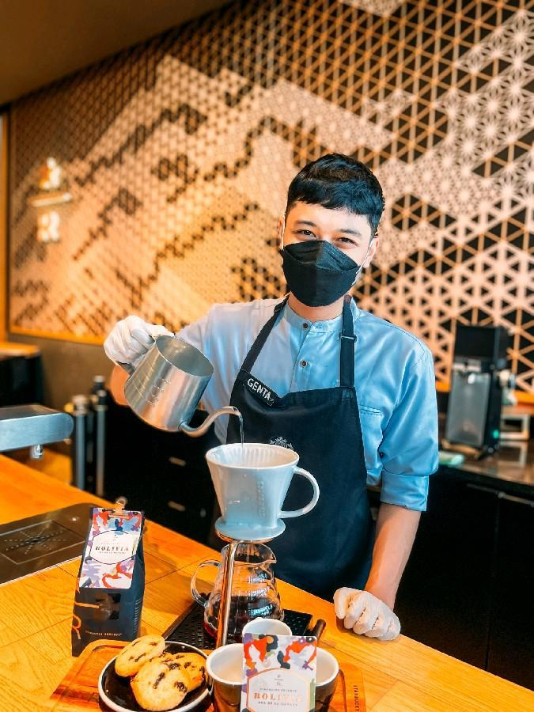
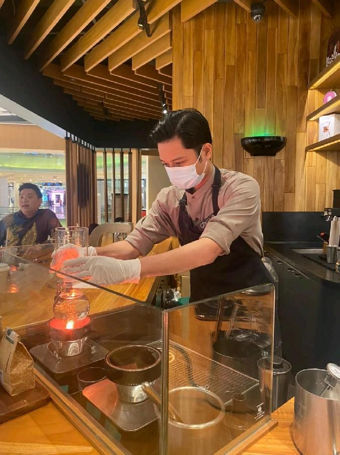
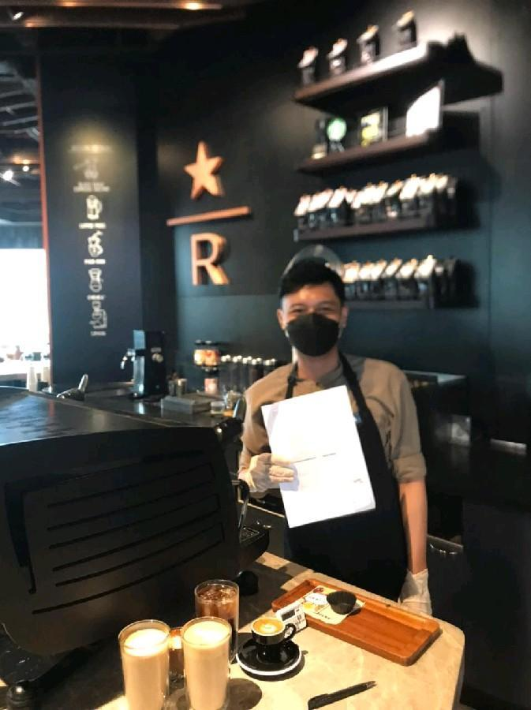

Role
- Creating starbucks experience to all customers where everybody is welcomed
- Crafting foods and beverages to serve for customers
- Doing regular coffee tasting to customers and other partners by demonstrating manual coffee brewing (Coffee Press, Pour-Over, Chemex, Siphon) while telling story and coffee knowledge
- Maintaining food and merchandise inventory to report to the shift supervisor.
Achievement
- Mar 2021 - Passed the advance coffee master training.
The training consist of more advance coffee brewing techniques such as chemex pour over and siphon, and also the story behind the methods.
- Aug 2021 - Passed the Black Eagle training.
The training consist of how to operate black eagle espresso machine.
Brewing Starbucks Reserve Coffee with Pour-Over Method

Advance Coffee Master Certification

Black Eagle Certification
